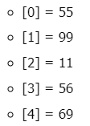
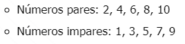
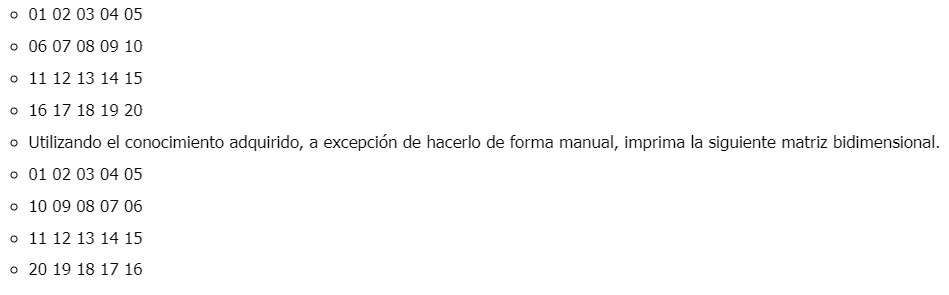
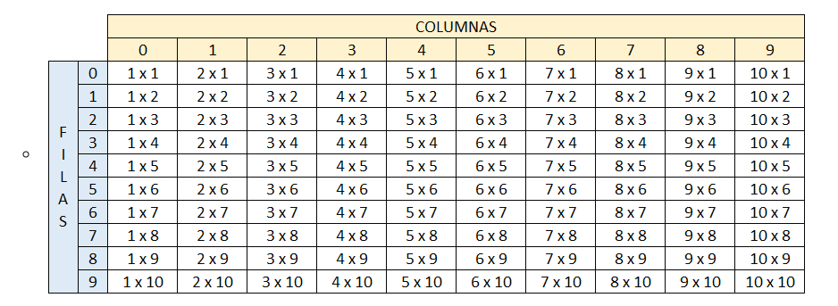

Ejercicios escritos en PSeInt con el perfil Estricto.
Crear un vector de tipo Entero con 5 posiciones, llenarlo con información solicitada al usuario. Después de recoger toda la información, se requiere imprimir el índice de cada posición en el arreglo con su valor de la siguiente manera:

Proceso EjercicioI
Definir vector Como Entero;
Definir i Como Entero;
Dimension vector[5];
Para i<-0 Hasta 4 Con Paso 1 Hacer
Escribir "Por favor, esciba un numero";
Leer vector[i];
FinPara
Para i<-0 Hasta 4 Hacer
Escribir "[ ", i, " ] = ",vector[i];
FinPara
FinProceso
Crear un arreglo de números enteros de 20 posiciones, el cual, debe ser llenado con números aleatorios entre 1 y 100; después de haber llenado dicho arreglo, se debe volver a recorrer utilizando un ciclo diferente al que se usó para llenarse e imprimir los números pares e impares. Ejemplo

Proceso EjercicioII
Definir arreglo Como Entero;
Definir num Como Entero;
Definir i Como Entero;
Dimension arreglo[20];
Escribir "Arreglo - 20 numeros aleatorios";
i<-0;
Mientras i<=19 Hacer
num <- azar(100);
arreglo[i] <- num;
Escribir Sin Saltar num, " - ";
i<-i+1;
FinMientras
Escribir "";
Escribir "Números pares: ";
Para i<-0 Hasta 19 Hacer
si arreglo[i] % 2 = 0 Entonces
Escribir Sin Saltar arreglo[i], " - ";
FinSi
FinPara
Escribir " ";
Escribir "Números Impares: ";
Para i<-0 Hasta 19 Hacer
si (arreglo[i]+1) % 2 = 0 Entonces
Escribir Sin Saltar arreglo[i], " - ";
FinSi
FinPara
Escribir " ";
FinProceso
Imprimir los números primos del 1 al 1000, el resultado debe ser buscado de forma matemática.
Proceso EjercicioIII
Definir num Como Entero;
Definir i Como Entero;
Definir contador Como Entero;
Para num <- 1 Hasta 1000 Hacer
contador<-0;
i <- 1;
Mientras i <= num Hacer
si (num % i)=0 Entonces
contador <-contador+1;
FinSi
i<-i+1;
FinMientras
si contador<=2 Entonces
Escribir Sin Saltar num, " ";
FinSi
num<-num+1;
FinPara
Escribir" ";
FinProceso
Dada la siguiente matriz bidimensional, el cual debe de quemar en el código

Proceso EjercicioIV
Definir matriz Como Entero;
Definir fila Como Entero;
Definir columna Como Entero;
Definir modificador Como Entero;
Dimension matriz[4,5];
matriz[0,0] <- 01;
matriz[0,1] <- 02;
matriz[0,2] <- 03;
matriz[0,3] <- 04;
matriz[0,4] <- 05;
matriz[1,0] <- 06;
matriz[1,1] <- 07;
matriz[1,2] <- 08;
matriz[1,3] <- 09;
matriz[1,4] <- 10;
matriz[2,0] <- 11;
matriz[2,1] <- 12;
matriz[2,2] <- 13;
matriz[2,3] <- 14;
matriz[2,4] <- 15;
matriz[3,0] <- 16;
matriz[3,1] <- 17;
matriz[3,2] <- 18;
matriz[3,3] <- 19;
matriz[3,4] <- 20;
Escribir " Matriz original ";
para fila<- 0 hasta 3 Hacer
para columna<-0 hasta 4 Hacer
Escribir Sin Saltar matriz[fila,columna], " ";
FinPara
Escribir "";
FinPara
Escribir "";
Escribir " Matriz convertida ";
para fila<- 0 hasta 3 Hacer
si fila = 1 o fila = 3 Entonces
modificador<- 4;
para columna<-0 hasta 4 Hacer
matriz[fila,columna]<-matriz[fila,columna] + modificador;
modificador <- modificador -2;
FinPara
FinSi
FinPara
para fila<- 0 hasta 3 Hacer
para columna<-0 hasta 4 Hacer
Escribir Sin Saltar matriz[fila,columna], " ";
FinPara
Escribir "";
FinPara
FinProceso
Se debe de imprimir el siguiente cuadro. El usuario deberá insertar la fila y columna de la cual desea ver el resultado, el resultado de cada celda debe estar previamente calculado en una matriz bidimensional la cual cada resultado obedecerá a la fila y columna insertada por el usuario.

Proceso EjercicioV
Definir matriz Como Caracter;
Definir fila Como Entero;
Definir columna Como Entero;
Definir NumColumna Como Entero;
Definir Numfila Como Entero;
Definir producto Como Entero;
Dimension matriz[10,10];
Escribir " Tabla de muliplicación ";
para fila<- 1 hasta 10 Hacer
para columna<-1 hasta 10 Hacer
Escribir Sin Saltar columna, "x", fila, " ";
FinPara
Escribir "";
FinPara
Escribir "";
Escribir " Para conocer el resultado por favor digite el numero del multiplicando ( Primer factor) y
despues el multiplicador (Segundo factor) ";
Escribir "";
Escribir "Multiplicando ";
leer NumColumna;
Escribir "Multiplicador ";
leer Numfila;
para fila<- 1 hasta 10 Hacer
para columna<-1 hasta 10 Hacer
producto <- columna * fila;
si fila=Numfila y columna=NumColumna Entonces
Escribir " El resultado de la multiplicación ", NumColumna, " x ", Numfila, " = ", producto ;
FinSi
FinPara
FinPara
FinProceso